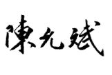

人生活在天地之气中，就像鱼儿离不开水。水的变化关乎鱼儿的存亡。同样的，天地之气的变化关乎我们的性命。
一次在南方旅游，第一天艳阳高照，之后连续五天都下雨。天气预报说接下来还有雨。但我对旅友们说，明天会晴天，可以早起登山去。果然，那天早上，我们在山顶看到了很美的日出。
其实，我并不会预报天气，只是根据古人所说，天地之气每五天会有一次变化。这种变化在雨季可能表现为晴雨的交替，在旱季可能表现为刮风，在冬天可能表现为寒潮降温等。这些仅仅是天地间可见的变化，还有我们肉眼看不见的无形的变化，在悄悄影响我们的身体。所以，中医讲究随着天时变化来养生。“故阴阳四时者，万物之终始也，死生之本也。逆之则灾害生，从之则苛疾不起。”这是《黄帝内经》告诫我们的，四时阴阳之气是决定生死的根本。
古人认为，天地之间充满着阴阳之气。天气属阳，地气属阴，阴阳二气总是处在一个此消彼长的变动中。所以，每五天一个小的变化，称之为一“候”。每三候有一个转换，称之为一“气”，也就是现在我们所说的二十四节气。
人们把中国传统的农历称为“阴历”，其实不确切。中国文化讲究的是阴阳平衡，所以农历是阴阳合历，以太阴历定一个月的周期，以太阳历定一年的周期。其中，二十四节气是根据太阳的运行位置来确定的。
《黄帝内经》中有一句箴言：“阳气者，若天与日，失其所则折寿而不彰。”如果我们希望身体阳气充足，就要跟随太阳的步伐，关注节气的更替。
每一个节气的到来，都意味着天地之气的转换。所以，每个节气都是一个养生的节点。我们随着节气来调整日常生活和饮食，就能达到事半功倍的养生效果。
本书根据每个节气的养生重点，以家常便饭的形式，搭配相应的饮方和食方。这些方法来源于我的家族百年来坚持顺时而食的实践经验，家中几代人都有受益。
关于书中所涉及的古代天文历法，曾求问于中国天文考古学学科创始人冯时先生，在此深表谢意！
“天之所助，虽小必大；天之所违，虽成必败。”顺应天时地时生活，就会得到上天的眷顾。谨以此书献给尊重自然、关心节序的读者朋友，祝您万事顺时、健康长寿！

2014年12月8日于北京